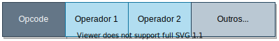
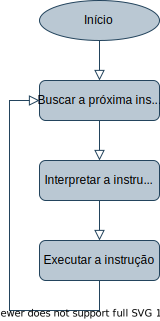
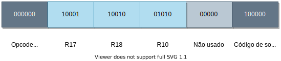
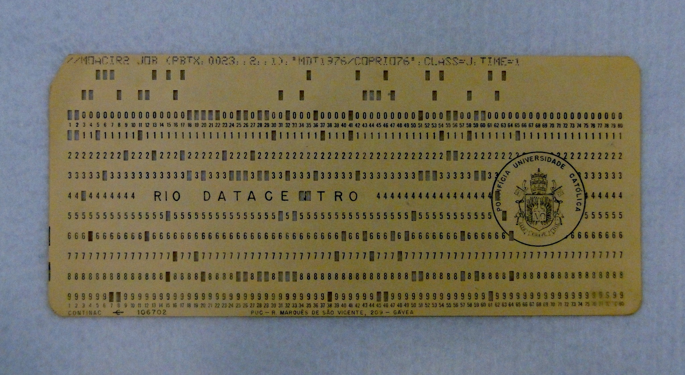
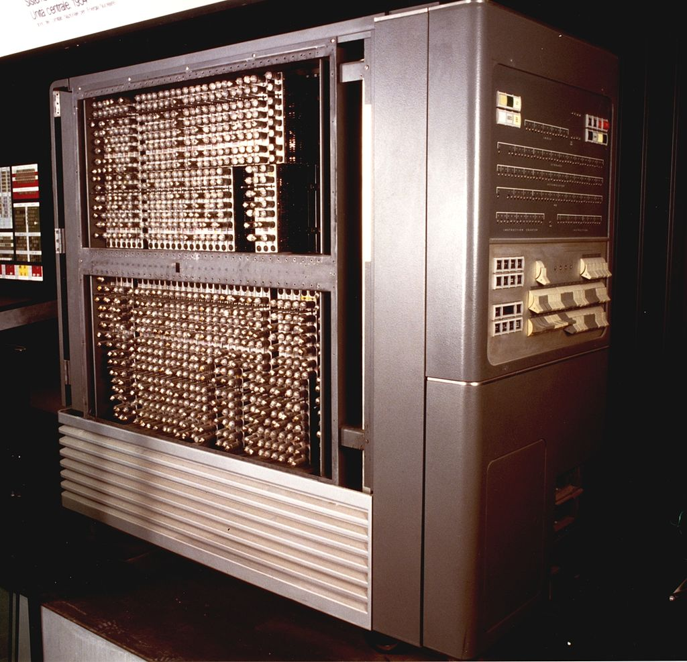
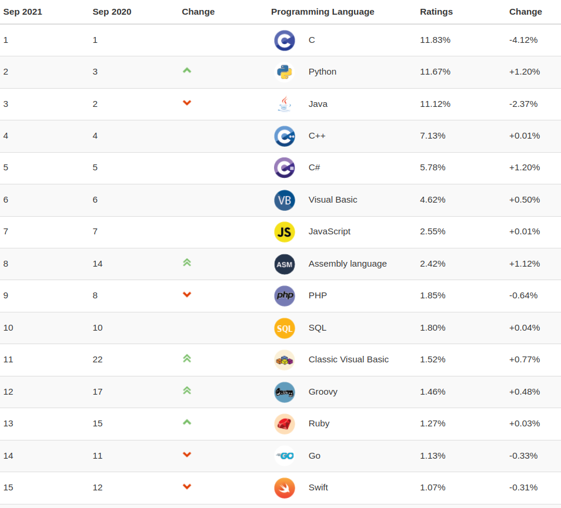

Universidade Atlântica
Introdução
Aula 01
Linguagem de Programação
Universidade Atlântica
Aula 01
Fernanda Passos
Linguagem de Programação
Horário e Sala
Contato
Sobre Linguagem de Programação:
Sobre Python:
LP: uma definição



# Supor n correspondente a $a0
fact:
sub $sp,$sp,8 # ajuste da pilha
sw $ra,4($sp) # salva o endereço de retorno
sw $a0,0(sp) # salva o argumento n
slt $t0,$a0,1 # teste para n<1
beq $t0,$zero,L1 # se n>=1, vá para L1
add $v0,$zero,1 # retorna 1 se n < 1
add $sp,$sp,8 # pop 2 itens da pilha
jr $ra
L1:
sub $a0,$a0,1 # n>=1, n-1
jal fact # chamada com n-1
lw $a0,0($sp) # retorno do jal; restaura n
lw $ra,4($sp)
add $sp,$sp,8
mult $v0,$a0,$v0 # retorna n*fact(n-1)
jr $raLinguagem de Alto Nível


integer procedure Fatorial(m); integer m;
Begin
integer F;
F := if m=1 then 1 else m*Fatorial(m-1);
Fatorial := F
end; ADD YEARS TO AGE.
MULTIPLY PRICE BY QUANTITY GIVING COST.
SUBTRACT DISCOUNT FROM COST GIVING FINAL-COST.
Fonte: https://digitalinnovation.one/artigos/cronologia-das-linguagens-de-programacao


char cores[5][10] = {"verde", "amarelo", "azul", "branco", "vermelho"};
int i;
for (i=0; i < 5; i++){
printf("cor %i: %s\n", i+1, cores[i]);
}